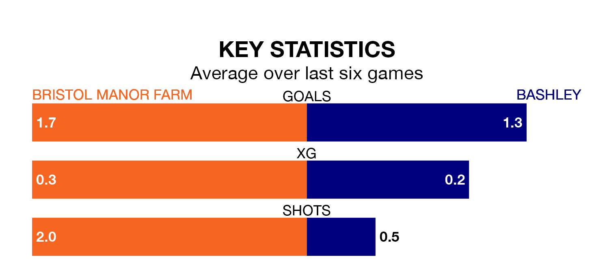

Bristol Manor Farm welcome Bashley to the Creek on Saturday looking to pick up points to end their three-game losing streak.
Bristol Manor Farm's struggles have left them with seven points from their last six Southern League Division One – South matches, while their opponents have earned five from a possible 18.
Bashley are 18th in the table after 17 games, of which they have won four and drawn five, earning 17 points.
Bristol Manor Farm are nine places ahead of the visitors in ninth, with seven wins and six draws putting them on 27 points.
With 21 goals in 17 games so far this season, Bashley are the league's second-lowest scorers with 1.2 goals per game. And they are conceding more than average, letting in 34 goals at a rate of 2.0 per game.
The home team are also below average scorers, with 1.6 goals per game, compared to a league average of 1.7. They have conceded 1.7 goals per game.
In the last three years, Bristol Manor Farm and Bashley have played each other on three occasions. Bristol Manor Farm won one of them and Bashley the other.
Their last meeting was on September 30, when Bristol Manor Farm won 1-0 away.
Bristol Manor Farm's last match was on January 13, a 1-0 loss against Malvern Town.
Bashley drew 2-2 with Cribbs last time out, on January 9.
Updated: 06:13 (UTC), 18/01/24